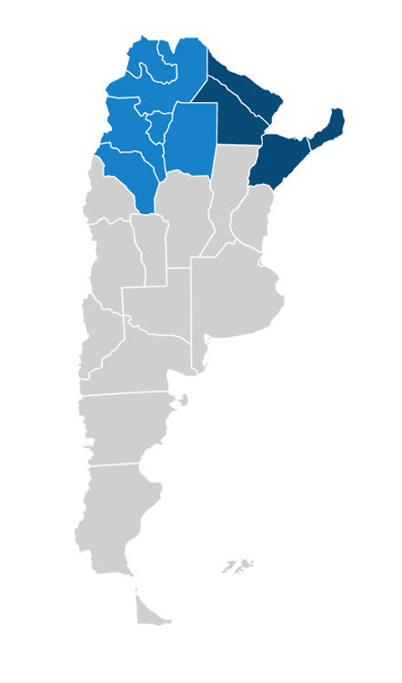

<section style="background-color: white;">
	<article class="container content_format">
        <div class="row">
        	<div class="col-md-12">

            	<div class="col-md-12">
                	
                </div>
                <div class="col-md-4">
                	<i class="fa fa-phone fa-square fa-2x text-secondary"></i>
                	<p class="text-muted"> NOA (Jujuy, Salta, Tucumán Santiago del Estero, Catamarca y La Rioja)</p>
                	<i class="fa fa-phone fa-square fa-2x text-primary"></i> 
                	<p class="text-muted"> NEA (Formosa, Chaco, Corrientes y Misiones)</p>
                </div>
            </div>
            	
        </div>    
	</article>
</section>